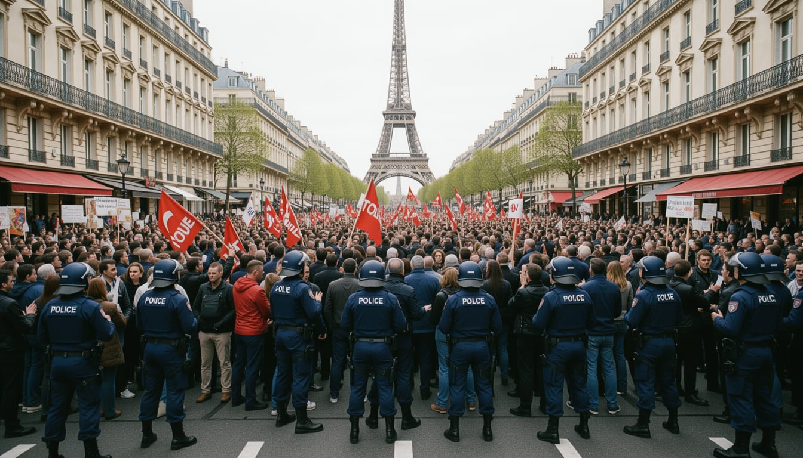

Student unions call to block schools after police ban Paris demonstration route
Education minister Philippe Baptiste rejects the blockade and offers 1 billion euros for building renovations, while five unions have called an intersectoral strike for Thursday 5 November.

Student and high school unions called for blocking schools and universities on Tuesday and Thursday, after police banned the route for a Paris demonstration on Saturday. Philippe Baptiste said "le droit au blocage n'existe pas". Baptiste said 1 billion euros is being put on the table for building renovation over three years.
After five weeks of student and high school mobilisation, Philippe Baptiste and Edouard Geffray presented an emergency plan on 26 October, replacing Parcoursup, capping seconde classes and reworking timetables. Pierre Sourzat said the 15,000 additional places fall far short of the 250,000 demanded, notably because 10,000 were cut last year.
Sabrine Kharbach, spokesperson of the Union étudiante, said the call to block schools and universities was a reaction to the banning of the Paris route filed by demonstrators for Saturday. She said it aimed to show what she called the "légitimité de leurs revendications".
Baptiste said on 27 October that "le travail doit reprendre lundi" and appealed to the right to study. Four United Nations rapporteurs said on 28 October they were "consternés" by the repression of high school and student demonstrations in recent weeks.
The CFDT, CGT, FO, UNSA and FSU have called an intersectoral strike for Thursday 5 November. The strike covers the public and private sectors and concerns wages, public services, employment and industry. In their call, the unions wrote that they support the right of lycée and university students to mobilize, demonstrate and assemble peacefully, freely and in safety.